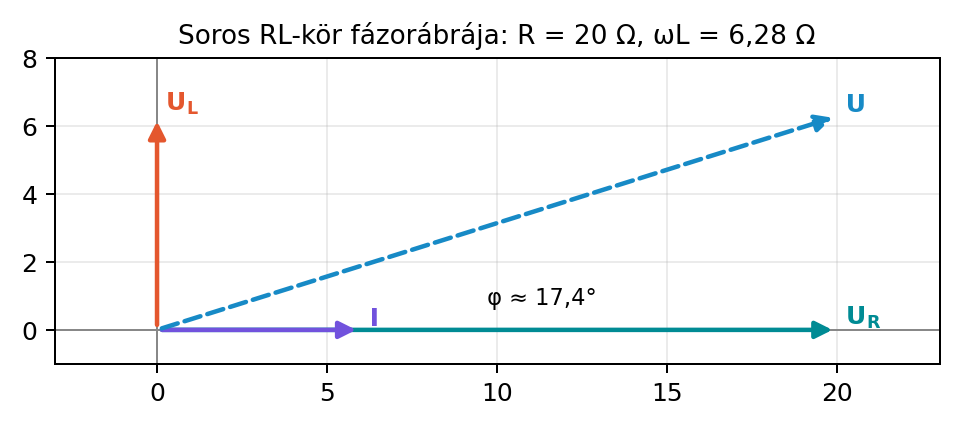

A kapcsolódó elmélet: tankönyv, 6.2 alfejezet.
Cél. Tanműhelyben, törpefeszültségű (jellemzően
24 V-os tanulói) környezetben mutasd meg, hogy a tekercs és
a kondenzátor váltakozó áramon korlátozza az áramot, és hogy ez a hatás
egyenáramon nem érvényesül.
Eszközök és anyagok. Törpefeszültségű váltakozó
áramú forrás (pl. 24 V, 50 Hz), egyenáramú
tápegység, 24 V-os jelzőlámpa, néhány 10–50 Ω,
1 W ellenállás, egy legalább 0,5 H-s tekercs,
egy 10–47 µF-os, legalább 63 V AC névleges
feszültségű fólia- (MKP) vagy bipoláris (motorindító) kondenzátor,
multiméter. Polarizált elektrolitkondenzátor váltakozó áramú próbára nem
használható.
Biztonsági korlát. A feladat tanműhelyi, törpefeszültségű környezetre vonatkozik; hálózati feszültségen önállóan ne végezd. A kondenzátor törpefeszültségen is tárolhat energiát, ezért a forrásról való lekapcsolás után süsd ki ellenálláson keresztül.
Lépések: 1. Kapcsold le a forrást, tartsd be a feszültségmentesítés öt biztonsági szabályát. 2. Állítsd össze az áramkört: feszültségforrás + jelzőlámpa + tekercs, sorba kötve. Először egyenáramú tápegységről tápláld. Figyeld meg, hogy a lámpa erősen világít-e. 3. Kapcsold le, végezz feszültségmentesítést, majd ugyanazt az áramkört kösd a váltakozó feszültségű forrásra. Figyeld meg, hogy a lámpa gyengébben világít-e, vagy esetleg alig észrevehetően. 4. Ismét lekapcsolás után cseréld ki a tekercset a kondenzátorra, és végezd el mind az egyen-, mind a váltakozó áramú próbát. 5. Multiméterrel mérd meg a forrás feszültségét, a lámpa kapocsfeszültségét és az áramkörben folyó áramot. Számold ki az egyes elemeken mért reaktanciát.
Ellenőrzés. A váltakozó áramú mérésnél a tekercs sorba kötve csökkenti a lámpa fényerejét, mert jelentkezik. Egyenáramnál a lámpa fényesebb. A kondenzátoros áramkörben egyenáramnál a lámpa nem világít (a kondenzátor feltöltődött), váltakozó áramnál viszont világít, mert a kondenzátor átengedi a váltakozó áramot.
Tipikus hibák. Tilos polarizált elektrolitkondenzátort váltakozó feszültségre kötni: felmelegszik, kiszáradhat és szétrobbanhat; védőszemüveg kötelező. Az átkötést csak feszültségmentes állapotban végezd; mérni a bekapcsolt, törpefeszültségű körön, megfelelő mérési állásban és a mérővezetékek megfelelő mérési kategóriájával szabad. A lámpa várható árama a választott kondenzátorral: -on, -nál , .
0,1 H-s tekercs reaktanciáját
50 Hz-en és 500 Hz-en.230 V-os hálózatra
közvetlenül, sorosan kapcsolnak egy 10 µF-os kondenzátort
és egy 1,0 H-s fojtótekercset, hogy megemeljék a
feszültséget. Számold ki a rezonanciafrekvenciát, és indokold, miért
veszélyes.50 Hz-en rezonanciába kerülhet, ami a két
elemen a hálózati feszültség többszörösét is létrehozhatja. Ezért ilyen
kapcsolást csak kifejezetten erre méretezve, védőelemekkel szabad
építeni.Egy tisztán induktív tekercsre 24 V, 50 Hz
váltakozó feszültséget kapcsolunk. Az áram 0,3 A. Határozza
meg a tekercs reaktanciáját és induktivitását.
Egy kondenzátor 10 µF kapacitású. Számítsa ki a
kapacitív reaktanciáját 50 Hz-en és
1 kHz-en.
Egy tekercs 0,5 H induktivitású és 12 Ω
ohmos ellenállású. 230 V, 50 Hz hálózatra
kapcsolva mekkora lesz az áram, ha a tekercs impedanciáját
képlettel számítjuk? (Ez a következő alfejezetben tanult impedancia
alkalmazása.)
Egy váltakozó áramú körben sorba van kötve egy 20 Ω-os
ellenállás és egy 0,02 H-s ideális tekercs. Rajzolja be a
fázorábrát, és határozza meg a fázisszöget, ha az áramot vesszük
referencia-irányba. (Csak a fázorok elrendezését kell ábrázolni, a
pontos impedanciaszámítást az Impedancia, soros és párhuzamos RLC,
rezonancia (tankönyv, 6.3) alfejezetben végezzük el.)
Egy frekvenciaváltó kimenetén a feszültség alapfrekvenciája
50 Hz, de a nagy kapcsolási frekvenciájú jelben
10 kHz-es összetevő is van. A szűrő
induktivitása sorosan a frekvenciaváltó kimenete és a terhelés között, a
kondenzátora a kimeneten párhuzamosan (keresztirányban) van; a terhelés
hatását hagyd figyelmen kívül. Egy
-s
szűrőinduktivitás és egy
-os
szűrőkondenzátor esetén hasonlítsd össze, mennyivel más a két elem
reaktanciája 50 Hz-en és 10 kHz-en. Miért jó
ez a szűrő számára?
Egy világítási áramkörben a kompakt fénycsövek gyakran tönkremennek. A szerelő azt gyanítja, hogy a hálózatban nagyfrekvenciás zavarok vannak. A legegyszerűbb mérési módszerrel, multiméterrel mit tud ellenőrizni, és hogyan igazolhatja a hiba valódi okát? Mire kell ügyelnie a fénycső tápegységének megbontása előtt?
Egy 0,1 H-s tekercs reaktanciája mekkora
50 Hz-en és a 3. harmonikuson (150 Hz)?
Egy 8 µF-os motor-üzemi kondenzátort 230 V,
50 Hz feszültségre kapcsolunk. Számítsd ki a reaktanciáját
és az áramát.
Egy ismeretlen kondenzátor 230 V, 50 Hz
feszültségen a lakatfogó (TRMS) szerint 0,25 A-t vesz fel.
Mekkora a reaktanciája és a kapacitása?
Egy 24 V-os, 50 Hz-es váltakozó
feszültségre kapcsolt fojtón 0,12 A folyik (az ohmos
ellenállás elhanyagolható). Mekkora az
és az
?
Mekkora kondenzátornak lenne 50 Hz-en ugyanakkora a
reaktanciája?
400 V-os hálózaton egy 50 µF-os fázisjavító
kondenzátor két fázisvezető közé, vonali feszültségre van kötve. Mekkora
az árama és a meddőteljesítménye
()?
Egy 100 m-es kábel egyik ere és a föld között
0,1 µF a kapacitás (szemléltető érték). Mekkora kapacitív
áram folyik 230 V, 50 Hz mellett, és hányad
része ez egy 30 mA-es áram-védőkapcsoló névleges
kioldóáramának?
Egy 24 V AC-s mágneskapcsoló-tekercs adatai:
,
zárt horgonnyal
,
nyitott horgonnyal
(50 Hz, szemléltető). Számítsd ki mindkét állapotban az
impedanciát, az áramot és a látszólagos teljesítményt. Melyik értékre
méretezed a 24 V-os vezérlőtranszformátort?
Felújításnál egy lekapcsolt áramkör erén a multiméter
92 V-ot mutat. Sorold fel, mit teszel, és mi különbözteti
meg a valódi feszültséget a kapacitív látszatfeszültségtől!
Adott:
Keresett:
,
Képlet:
és
Behelyettesítve:
Ellenőrzés:
tipikus fojtótekercs érték. ∎
Adott:
Keresett:
Képlet:
Behelyettesítve:
Ellenőrzés: nagyobb frekvencián kisebb reaktancia, ami megfelel az
elméletnek. ∎
Adott:
Keresett:
Képlet:
és
Behelyettesítve:
Ellenőrzés: a tekercs reaktanciája sokkal nagyobb, mint az ohmos
ellenállása, ezért az impedanciát döntően az
határozza meg. Ha az ohmos ellenállást elhanyagoltuk volna,
lett volna, a különbség elhanyagolható. ∎
Az áram referencia-irányba (vízszintesen jobbra) mutat. Az ellenálláson eső feszültség fázisban van az árammal, tehát ugyanabba az irányba mutat. A tekercsen eső feszültség 90°-ot siet az áramhoz képest, tehát függőlegesen felfelé mutat. Az eredő feszültség az ellenállás és a tekercs feszültségének vektorösszege.

Az ábrán a feszültség és az áram közötti fázisszög az és az vektorok által bezárt szög. Az és vektorokból . Adatokkal: , ; az áram -kal késik a feszültséghez képest. ∎
Adott:
Keresett:
és
mindkét frekvencián, a rezonanciafrekvencia és az osztó átvitele
Terheletlen LC-osztó:
(a reaktanciák előjelével)
.
Képlet:
Behelyettesítve
-en:
(elhanyagolható)
;
az osztó átvitele
,
az alapharmonikus akadálytalanul átmegy.
Behelyettesítve
-en:
Rezonanciafrekvencia: . A -es összetevőre , azaz : kb. -szoros csillapítás.
Következtetés. A soros induktivitás a nagyfrekvenciás összetevőt fojtja ( -en), a keresztirányú kondenzátor pedig a maradékot levezeti. A szűrő akkor hatékony, ha a rezonanciafrekvenciája () jóval az alapfrekvencia felett, de jóval a zavaró frekvencia alatt van. (Figyelem: és esetén lenne, és a még a rezonancia alatt van, ott a szűrő nem csillapít, hanem kb. -szörösre erősít.) ∎
Hibakeresési vázlat. A hálózati zavarok gyakran a nemlineáris fogyasztóktól (például kapcsolóüzemű tápegységek) származnak. Multiméterrel csak a feszültség effektív értéke és (ha a műszer tudja) a frekvencia mérhető: ez a szinuszostól eltérő, nagyfrekvenciás zavart nem mutatja ki, legfeljebb az effektív érték eltérését a vártól. A nagyfrekvenciás zavar valódi okát oszcilloszkóppal vagy hálózatminőség-elemzővel kell igazolni (lásd Oszcilloszkóp és jelalakok (tankönyv, 8.3)). A beépített elektronikát (a kompakt fénycső tápegységét) nem javítjuk, hanem a fénycsövet cseréljük. Biztonság: a kompakt fénycső tápegységének szűrőkondenzátora a hálózati csúcsfeszültségre (kb. 325 V) töltődik, ezért megbontás előtt az öt szabály szerint feszültségmentesíteni (lekapcsolás, visszakapcsolás elleni biztosítás, feszültségmentesség ellenőrzése kétpólusú vizsgálóval, szükség szerint földelés és rövidre zárás, szomszédos részek lefedése) és a kondenzátort ellenálláson át ki kell sütni. Feszültség alatt a készüléket megbontani tilos.
; . Háromszoros frekvencián háromszoros az . ∎
; (vö. az Egyfázisú aszinkron motorok (tankönyv, 26.6) üzemi kondenzátorával). ∎
; . ∎
; . Azonos reaktanciához: . ∎
; . A meddőteljesítményt és a kompenzálást a Teljesítmények és teljesítménytényező (tankönyv, 6.4) és a Fázisjavítás méretezése (tankönyv, 36.1) alfejezet tárgyalja. ∎
. Ez a kb. negyede: a hosszú kábelek és a szűrők szivárgó árama összeadódva indokolatlan kioldást okozhat (Áram-védőkapcsoló (FI) és kiegészítő védelem (tankönyv, 21.4)). ∎
Zárt horgony:
;
;
;
.
Nyitott horgony:
;
;
;
.
A vezérlőtranszformátornak a tartási terhelést folyamatosan, a kb.
-es
behúzási lökést (több egyidejűleg behúzó tekercsnél ezek összegét) rövid
ideig, megengedhetetlen feszültségesés nélkül kell kiszolgálnia
(ellenőrizendő: gyártói adatlap). ∎